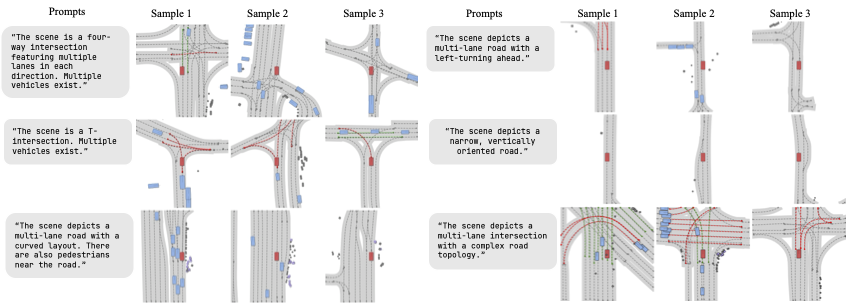

Summary
Given a text prompt or an input image, the model synthesizes diverse and realistic 3D scenario rollouts, including map structure, dynamic agents, pedestrians, infrastructure, and ego-view observations. The model operates in a vectorized latent space that jointly represents road layout and actor dynamics.
We model scenes as variable-length vector tokens and condition generation with text, image, and depth signals. A gated cross-global control mechanism combines dense cross-attention with a compact global-context route, enabling controllable edits while preserving topology, geometric consistency, and long-range rollout coherence.
Method
ScenarioControl generates initial scenes with a controllable latent diffusion model conditioned on text prompts or agent-view images. We use a gated cross-global control mechanism to fuse dense conditioning signals with sparse scene tokens, and a count-injection head for controlling lane and agent cardinality. The generated scenario is then rolled out with behavior simulation and projected into camera space to condition LoRA-adapted Wan 2.2 for photorealistic video generation and continuation.

Results
We visualize initial scenes generated via ScenarioControl under both image and text conditioning, alongside video rendering of the resulting driving rollouts. Across conditions, the method produces diverse and realistic 3D scenarios with consistent road geometry, plausible agent behavior, and coherent ego-view observations.
Image-Conditioned Scene Generation

Text-Conditioned Scene Generation

Firstframe-Conditioned Video
BibTeX
@misc{scenariocontrol2026,
title = {ScenarioControl: Vision-Language Controllable Vectorized
Latent Scenario Generation},
author = {Gao, Lili and Xu, Yanbo and Koch, William Alexander and
Ruffino, Samuele and Rivkin, Dmitriy and Rowe, Luke and
Chalaki, Behdad and Girgis, Roger and Ost, Julian and
Bijelic, Mario and Heide, Felix},
year = {2026},
note = {Project page}
}